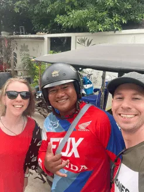
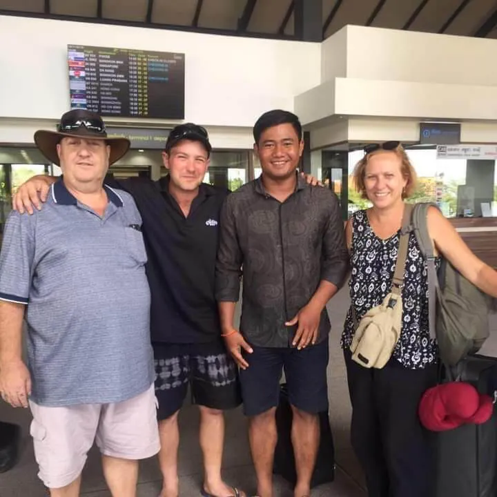
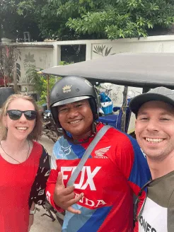
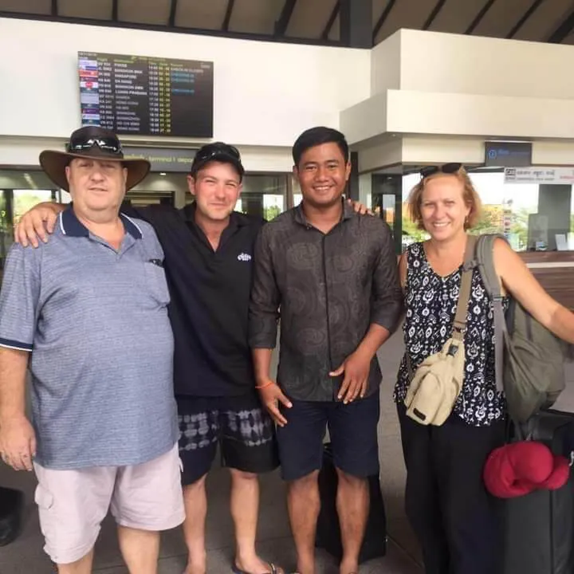

EXPERIENCE CAMBODIA
JUST LIKE YOU'RE A LOCAL
WHO KNoWS THEIR LAND
BETTER THAN A
LOCAL?
My name is Voleak, and I'm a proud Cambodian, and I want to show you my unique country. Over the last decade, I have had the privilege of meeting thousands of people and helping them explore Cambodia and see everything it has to offer.
Of course, I have to show you Angkor Wat, but let me show you the lesser known temples that surround it. If you're really interested in our ancient culture, we can head out of the city and into the jungle to see the huge pyramid temple.
When you're finished taking in our magical sites and time travelling amongst our ancient ruins, then you're going to need some food. Whether you want to go down by the river to grab some street food, or you fancy tucking into a Khmer BBQ, just let me know, and I can take you where you need to go in my traditional Tuk Tuk.
EXPLORE EVERY CORNER OF OUR ANCIENT WONDERLAND
All options come with free airport pick-up and refreshments.
Temples
Cambodia has around 4000 temples with many of them having being built in Siem Reap. Let me show you some of these awe-inspiring holy sites, that you're guaranteed to never forget.
Floating Villages
Down by the water in Siem Reap, numerous. Cambodia is home to over 170 of these unique floating villages, let me help you experience these fascinating communities.
Mountains and Waterfalls
We have a mountain range in Siem Reap, which is the birthplace of the Khmer Empire. It's an area of stunning beauty, decorated with beautiful waterfalls and ancient temples.
Activities
There are many activities you can get up to whilst in Cambodia, from eating bugs to training Kun Khmer, the traditional Cambodian martial art. Whatever you want to experience, I can help make it happen.
I'M HAPPY TO REPRESENT
OUR FRIENDLY, WARM AND
WELCOMING CULTURE
 
Diane Smith
Voleak Dem was our driver for 3 days in Siem Reap. We did Lotus Farm, Stilted Village and 2 days Angkor Temples.We were super impressed with his professionalism, kindness and attention to detail on every trip. He has a very comfortable Tuk Tuk and it is even rain proof when needed. AHe provided cold towels, water and very welcome beer LP.1 highly recommend Voleak when you need transport in Siem Reap.Thanks again VoleakDianne and Marie.
Svetlana Moroz
2 weeks ago we had a short but amazing trip to Cambodia! We had only 4 days but big thanks to Mr. Voleak Dem our trip was organised in a very efficient and professional way!Voleak is a very nice and friendly traditional tuk tuk driver and tour guide. He advised how to plan a trip, organised our transportation from Phnom Penh to Siem Reap (we had a very nice taxi driver!!), a visit of floating village and of course our visit of Angkor Wat.
Birgit Leone
We would like to thank our Tuk Tuk driver Voleak Dem for a few wonderful days in and around Siem Reap. Voleak is such a nice guy, a real gentleman. He went above and beyond to make us happy. Upon our departure he even organized a car for us from Sihanoukville to Phnom Penh (after a stay on Koh Rong Island).Thanks Voleak for making our stay very memorable
Daryl Wilson
I want to give a sincere thank you to Voleak Dem for his safe transportation and unlimited travel advice while I was in Siem Reap. I highly recommend him, hire him as your all around fixer while in Cambodia!
Victoria Murray
Leaving Cambodia after 3.5 wonderful days.Had a great time with Voleak Dem and Sareik Phok, exploring all the temples in beautiful Cambodia. These gentlemen worked with our schedule to help us explore siem reap area and the temples at our own pace, from early morning to late evening when needed always with smiling faces. Voleak has one of the best maintained, clean and roomy tuk tuks that we have ever seen. We had very comfortable rides, Voleak kept us well hydrated, make our walks in the Cambodian heat short as possible, and his tuktuk could fit our huge bags which was impressive (we had problem getting them into taxis in Singapore).
Zsuzsa Tóth-Sándorfì
If you plan to visit Siem Reap and Angkor choose for your tuk tuk driver Voleak Dem. He is very kind and helpful. He can help you in each of your questions and can give you excellent recommendations what to visit in Angkor with a good schedule. We were 6 of us and he could also manage this number of people with 2 tuktuks. Thank you Voleak for the 3 days
Frequently Asked Questions
It is totally up to you, where you would like to visit first, but from experience the priority on everyone's list of things to see, is the world-famous Angkor Wat.
You can obtain a tourist visa in multiple ways. You can apply before arrival online at, www.evisa.gov.uk or at your Cambodian Embassy. Alternatively, you can also apply up-on arrival at Cambodia's airport. Price for the visa is currently $30
You can purchase tickets for the temples online from www.angkorenterprise.gov.kh, or I can take you to the ticket office on the day of the tour. Prices are:
$37 for 2 days, valid for 5 days
$62 for 5 days, valid for 10 days
$72 for 10 days, valid for 31 days
In Siem Reap, money exchanges are all over town, I can drive you there and help if needed. In Cambodia, we use Cambodian Riels, and US Dollars interchangeably.
There are a large amount of restaurants all over Siem Reap, with a good mix of Khmer food and dishes from all over the world, don't hesitate to ask me for recommendations from personal to tourist favourites.
Yes, I can meet you as soon as you exit the airport, and take you to your hotel or whichever destination you require.